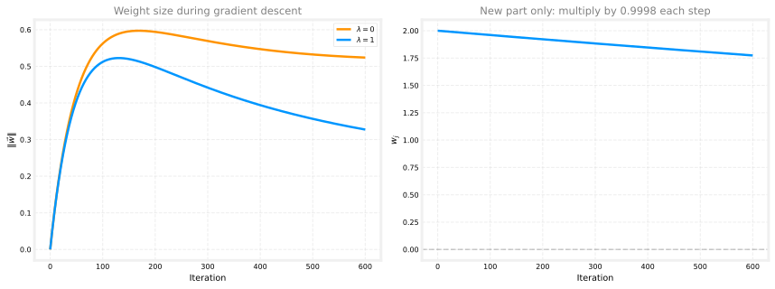

Regularized Linear and Logistic Regression
machine-learning
supervised-learning
Gradient descent with regularization for linear and logistic regression: the same lambda penalty on weights, weight decay, and unchanged bias updates.
On the regularization page, you learned what regularization does. It adds a penalty that keeps the weights \(w_1, \ldots, w_n\) from growing too large, so the model is less likely to overfit. You also saw the modified cost function with \(\lambda\) and the squared-weight penalty.
This page is about how you actually train with that penalty. You will still use gradient descent, the same step-by-step loop from earlier in the course. Make a prediction, measure error, nudge the parameters a little, repeat. The loop does not change. Only the formula for the cost \(J\) (and one small term in the update for each \(w_j\)) is different.
A useful mental picture is a recipe you already know. You still mix the same ingredients (features, predictions, errors). You just add one new ingredient, the regularization penalty, and that small change alters how each weight gets nudged on every step.
We start with linear regression (predicting a number like house price), then do the same for logistic regression (predicting yes/no, like malignant or benign). If the linear section feels familiar, that is on purpose. The logistic section reuses almost the same update rules.
Review Questions
1. What is the goal when training a regularized model?
TipAnswer
Find \(\vec{w}\) and \(b\) that minimize the regularized cost \(J(\vec{w}, b)\) on the training set.
Regularized Linear Regression
Think back to multiple linear regression. You chose features, set starting values for \(\vec{w}\) and \(b\), and ran gradient descent until the cost stopped dropping. Regularized linear regression is the same workflow. You still minimize a cost \(J(\vec{w}, b)\). The only difference is that \(J\) now has two parts. The first part is the usual squared-error fit. The second part is the weight penalty from the regularization page.
In words, the optimizer is still trying to fit the training data, but it also gets a bill every time a weight grows large. A model that bends sharply to hit every training point may score well on the fit term and badly on the penalty term. Regularized training looks for a balance.
Cost Function
Here is the cost you are minimizing (written again so this page stands on its own):
\[ J(\vec{w}, b) = \frac{1}{2m} \sum_{i=1}^{m} \big(f_{\vec{w},b}(\vec{x}^{(i)}) - y^{(i)}\big)^2 + \frac{\lambda}{2m} \sum_{j=1}^{n} w_j^2 \]
where \(f_{\vec{w},b}(\vec{x}) = \vec{w} \cdot \vec{x} + b\) for linear regression and \(\lambda\) is the regularization parameter you choose.
Read the formula left to right. The first big sum is the average squared prediction error you already know from the cost function page. The second sum adds up \(w_j^2\) across all feature weights. Larger weights make that penalty larger. The knob \(\lambda\) controls how strongly you care about keeping weights small. A larger \(\lambda\) pushes harder toward a simpler, less wiggly fit.
Before regularization, gradient descent for multiple linear regression repeated updates of the form
\[ w_j \leftarrow w_j - \alpha \frac{\partial}{\partial w_j} J(\vec{w}, b), \qquad b \leftarrow b - \alpha \frac{\partial}{\partial b} J(\vec{w}, b) \]
for \(j = 1, \ldots, n\), with learning rate \(\alpha\). Nothing about that loop changes. You still update every \(w_j\) and \(b\) on each iteration.
The symbol \(\frac{\partial J}{\partial w_j}\) is a partial derivative. You can read it as “how fast does the cost change if I wiggle only \(w_j\) while holding everything else fixed?” Gradient descent uses those slopes to decide which direction to move each parameter. Because \(J\) now includes the penalty, the slopes for each \(w_j\) pick up one extra piece. That is what the next subsection spells out.
Updated Partial Derivatives
For the unregularized cost, you already had
\[ \frac{\partial J(\vec{w}, b)}{\partial w_j} = \frac{1}{m} \sum_{i=1}^{m} \big(f_{\vec{w},b}(\vec{x}^{(i)}) - y^{(i)}\big)\, x_j^{(i)} \]
\[ \frac{\partial J(\vec{w}, b)}{\partial b} = \frac{1}{m} \sum_{i=1}^{m} \big(f_{\vec{w}, b}(\vec{x}^{(i)}) - y^{(i)}\big) \]
The first formula says how the prediction errors pull on weight \(w_j\) through feature \(x_j^{(i)}\). The second formula is the same idea for the bias \(b\), which does not multiply a feature.
After adding the regularization term, the derivative with respect to \(w_j\) gains one extra term:
\[ \frac{\partial J(\vec{w}, b)}{\partial w_j} = \underbrace{\frac{1}{m} \sum_{i=1}^{m} \big(f_{\vec{w},b}(\vec{x}^{(i)}) - y^{(i)}\big)\, x_j^{(i)}}_{\text{same as before}} + \underbrace{\frac{\lambda}{m}\, w_j}_{\text{new regularization term}} \]
The underbrace labels are the whole point. The data-fitting part is unchanged. The new term \(\frac{\lambda}{m} w_j\) is proportional to the current weight. If \(w_j\) is large and positive, this term is large and positive, so gradient descent will push \(w_j\) downward. If \(w_j\) is large and negative, the term is large and negative, so gradient descent will push \(w_j\) upward toward zero. Either way, the penalty fights extreme weights.
The derivative with respect to \(b\) is unchanged, because we do not regularize \(b\):
\[ \frac{\partial J(\vec{w}, b)}{\partial b} = \frac{1}{m} \sum_{i=1}^{m} \big(f_{\vec{w}, b}(\vec{x}^{(i)}) - y^{(i)}\big) \]
Why leave \(b\) alone? The bias shifts the whole prediction up or down, like setting a baseline price for every house. Penalizing \(b\) would make that baseline harder to fit and usually does not help with wiggly overfitting, which comes more from large feature weights.
Gradient Descent Updates
Now plug the new derivatives into the usual update rules. The algebra looks longer, but the idea is the same. Compute each slope, multiply by the learning rate \(\alpha\), and subtract from the current parameter. Repeat until convergence (or for a fixed number of steps):
\[ w_j \leftarrow w_j - \alpha \left( \frac{1}{m} \sum_{i=1}^{m} \big(f_{\vec{w},b}(\vec{x}^{(i)}) - y^{(i)}\big)\, x_j^{(i)} + \frac{\lambda}{m}\, w_j \right) \quad \text{for } j = 1, \ldots, n \]
\[ b \leftarrow b - \alpha \left( \frac{1}{m} \sum_{i=1}^{m} \big(f_{\vec{w}, b}(\vec{x}^{(i)}) - y^{(i)}\big) \right) \]
As always, compute all new \(w_j\) values and the new \(b\) from the current parameters, then assign them together (simultaneous updates). Do not update \(w_1\) first and then use that new \(w_1\) while computing the update for \(w_2\) in the same iteration.
Review Questions
1. After adding regularization to linear regression, which derivative changes: \(\partial J / \partial w_j\), \(\partial J / \partial b\), or both?
TipAnswer
Only \(\partial J / \partial w_j\) changes. The update for \(b\) uses the same formula as unregularized linear regression.
1. What new term appears in \(\partial J / \partial w_j\)?
TipAnswer
\(\frac{\lambda}{m} w_j\), which penalizes large weights.
Weight Decay Intuition
The update rules above are correct but not very visual. You can rewrite the update for \(w_j\) to see what regularization does on each step:
\[ w_j \leftarrow w_j \left(1 - \alpha \frac{\lambda}{m}\right) - \alpha \left( \frac{1}{m} \sum_{i=1}^{m} \big(f_{\vec{w},b}(\vec{x}^{(i)}) - y^{(i)}\big)\, x_j^{(i)} \right) \]
The same update can be read as two labeled pieces:
\[ w_j \leftarrow \underbrace{w_j \left(1 - \alpha \frac{\lambda}{m}\right)}_{\text{new part}} - \underbrace{\alpha \frac{1}{m} \sum_{i=1}^{m} \big(f_{\vec{w},b}(\vec{x}^{(i)}) - y^{(i)}\big)\, x_j^{(i)}}_{\text{original part}} \quad \text{for } j = 1, \ldots, n \]
The second term is the usual gradient descent step from multiple linear regression. It is the part that reacts to prediction errors on the training set. The new piece is the factor \(\left(1 - \alpha \frac{\lambda}{m}\right)\) in front of \(w_j\).
Picture a volume knob on a speaker. Before listening to the error signal, you turn the knob down just a tiny bit. That is the multiply-by-something-slightly-less-than-1 step. Then the data term tells you whether to turn it back up or down to match the training examples.
Because \(\alpha\) is small (say \(0.01\)), \(\lambda\) is moderate (say \(1\)), and \(m\) is the training set size (say \(50\)),
\[ \alpha \frac{\lambda}{m} \approx \frac{0.01 \times 1}{50} = 0.0002 \]
so \(1 - \alpha \frac{\lambda}{m} \approx 0.9998\). On every iteration, you multiply \(w_j\) by a number slightly less than \(1\) before applying the usual error-based update. The shrink is tiny each time, but it adds up over hundreds or thousands of iterations.
The plot below makes that idea concrete. The left panel tracks the overall weight size \(\|\vec{w}\|\) during gradient descent on the same five house-size points used on the overfitting page (degree-4 polynomial features, feature scaling applied so training stays stable, \(\alpha = 0.01\), \(m = 5\)). With \(\lambda = 0\), \(\|\vec{w}\|\) can grow as the model chases every training point. With \(\lambda = 1\), the penalty keeps \(\|\vec{w}\|\) smaller. The right panel isolates the new part alone using the numeric example above (\(\alpha = 0.01\), \(\lambda = 1\), \(m = 50\)). If \(w_j\) started at \(2.0\) and only the shrink factor \(\left(1 - \alpha \frac{\lambda}{m}\right)\) were applied each step (no data term), you would see a slow, steady slide toward zero.
That is why regularization is sometimes called weight decay. The same factor appears in regularized logistic regression (with a different data-driven term). Each step shrinks the weights a little, then lets the data pull them back where needed. The final weights are whatever balance the two forces settle on.
Review Questions
1. In the rewritten update, what does the factor \(\left(1 - \alpha \frac{\lambda}{m}\right)\) do to \(w_j\) each iteration?
TipAnswer
It multiplies \(w_j\) by a number slightly less than \(1\), shrinking the weight a little before the usual data-driven update.
1. Assuming the learning rate \(\alpha\) is a small number like \(0.001\), \(\lambda = 1\), and \(m = 50\), what is the effect of the new part on updating \(w_j\)?
Recall the regularized gradient descent update from above. Each iteration performs simultaneous updates on every \(w_j\) for \(j = 1, \ldots, n\).
\[ w_j \leftarrow w_j - \alpha \left( \frac{1}{m} \sum_{i=1}^{m} \big(f_{\vec{w},b}(\vec{x}^{(i)}) - y^{(i)}\big)\, x_j^{(i)} + \frac{\lambda}{m}\, w_j \right) \]
\[ b \leftarrow b - \alpha \left( \frac{1}{m} \sum_{i=1}^{m} \big(f_{\vec{w}, b}(\vec{x}^{(i)}) - y^{(i)}\big) \right) \]
In lecture, the update for \(w_j\) is rearranged to emphasize the impact of regularization.
\[ w_j \leftarrow \underbrace{w_j \left(1 - \alpha \frac{\lambda}{m}\right)}_{\text{new part}} - \underbrace{\alpha \frac{1}{m} \sum_{i=1}^{m} \big(f_{\vec{w},b}(\vec{x}^{(i)}) - y^{(i)}\big)\, x_j^{(i)}}_{\text{original part}} \quad \text{for } j = 1, \ldots, n \]
The new part decreases the value of \(w_j\) each iteration by a little bit.
The new part increases the value of \(w_j\) each iteration by a little bit.
The new part’s impact varies each iteration.
TipAnswer
a. With these values, \(\alpha \frac{\lambda}{m} = \frac{0.001 \times 1}{50} = 0.00002\), so the new part multiplies \(w_j\) by \(1 - 0.00002 = 0.99998\). That is slightly less than \(1\), so \(w_j\) shrinks a little on every iteration before the original (data-driven) part is applied.
Regularized Logistic Regression
Once you understand the linear case, the classification case is almost a copy-paste. That similarity is not a coincidence. In the course videos, the gradient update for regularized logistic regression is presented as nearly the same as the update for regularized linear regression. Only the definition of the prediction \(f_{\vec{w},b}(\vec{x})\) changes.
Logistic regression predicts a probability between 0 and 1 instead of a dollar amount. It can overfit too. Suppose you build a feature vector with many powers of \(x_1\) and \(x_2\), so \(\vec{x}\) is a high-degree polynomial. You pass \(\vec{w} \cdot \vec{x} + b\) through the sigmoid, as in logistic regression, and train with gradient descent. With enough parameters, the decision boundary can twist and loop to fit every training point. That is the same high-variance problem you saw in the classification panels on the overfitting page.
Even when you are not using polynomials, training with many features (dozens or hundreds of inputs per example) raises the risk of overfitting. Regularization is one of the main tools for keeping those models usable on new data.
Regularization addresses overfitting the same way as in linear regression. Take the logistic cost and add the familiar penalty:
\[ J(\vec{w}, b) = \underbrace{-\frac{1}{m} \sum_{i=1}^{m} \Big[ y^{(i)} \log f_{\vec{w},b}(\vec{x}^{(i)}) + \big(1 - y^{(i)}\big)\log\big(1 - f_{\vec{w},b}(\vec{x}^{(i)})\big) \Big]}_{\text{log loss}} + \underbrace{\frac{\lambda}{2m} \sum_{j=1}^{n} w_j^2}_{\text{regularization term}} \]
where
\[ f_{\vec{w},b}(\vec{x}) = g(\vec{w} \cdot \vec{x} + b) \]
and \(g\) is the sigmoid function. Minimizing this cost penalizes large \(w_1, \ldots, w_n\), so even with many features the boundary can stay smoother and generalize better. You still have high-degree or high-dimensional features available if the data truly need them, but their influence is kept in check.
Updated Partial Derivatives
Compare with gradient descent for logistic regression. The unregularized derivatives were
\[ \frac{\partial J(\vec{w}, b)}{\partial w_j} = \frac{1}{m} \sum_{i=1}^{m} \big(f_{\vec{w},b}(\vec{x}^{(i)}) - y^{(i)}\big)\, x_j^{(i)} \]
\[ \frac{\partial J(\vec{w}, b)}{\partial b} = \frac{1}{m} \sum_{i=1}^{m} \big(f_{\vec{w},b}(\vec{x}^{(i)}) - y^{(i)}\big) \]
Notice that these look like the linear-regression derivatives. That is because the log-loss gradient has the same \((f_{\vec{w},b}(\vec{x}^{(i)}) - y^{(i)})\) factor times \(x_j^{(i)}\) for each weight. The only change in the prediction step is that \(f_{\vec{w},b}\) is now a sigmoid probability instead of a straight-line output.
With regularization, only \(\partial J / \partial w_j\) picks up the same extra term as linear regression:
\[ \frac{\partial J(\vec{w}, b)}{\partial w_j} = \frac{1}{m} \sum_{i=1}^{m} \big(f_{\vec{w},b}(\vec{x}^{(i)}) - y^{(i)}\big)\, x_j^{(i)} + \frac{\lambda}{m}\, w_j \]
The bias derivative is unchanged:
\[ \frac{\partial J(\vec{w}, b)}{\partial b} = \frac{1}{m} \sum_{i=1}^{m} \big(f_{\vec{w},b}(\vec{x}^{(i)}) - y^{(i)}\big) \]
So for implementation, you can reuse the same regularized update code. Swap in the logistic prediction when you compute \(f_{\vec{w},b}(\vec{x}^{(i)})\), and leave the \(+\frac{\lambda}{m} w_j\) term exactly as in the linear case.
Gradient Descent Updates
The update equations are identical in form to regularized linear regression. The only difference is that \(f_{\vec{w},b}(\vec{x})\) is now the sigmoid output, not \(\vec{w} \cdot \vec{x} + b\):
\[ w_j \leftarrow w_j - \alpha \left( \frac{1}{m} \sum_{i=1}^{m} \big(f_{\vec{w},b}(\vec{x}^{(i)}) - y^{(i)}\big)\, x_j^{(i)} + \frac{\lambda}{m}\, w_j \right) \quad \text{for } j = 1, \ldots, n \]
\[ b \leftarrow b - \alpha \left( \frac{1}{m} \sum_{i=1}^{m} \big(f_{\vec{w},b}(\vec{x}^{(i)}) - y^{(i)}\big) \right) \]
Again, regularize \(\vec{w}\) but not \(b\), and use simultaneous updates.
In the Lab: Overfitting interactive tool, you can turn regularization on during training and try different values of \(\lambda\) for both regression and classification. Watch how a larger \(\lambda\) smooths a wiggly curve or simplifies a twisted decision boundary. That plot is a good sanity check for the formulas on this page.
Review Questions
1. How do the regularized gradient descent updates for logistic regression differ from those for linear regression?
TipAnswer
The formulas are the same. Only the prediction \(f_{\vec{w},b}(\vec{x})\) changes (sigmoid of \(\vec{w} \cdot \vec{x} + b\) instead of \(\vec{w} \cdot \vec{x} + b\)).
1. True or false? Regularized logistic regression adds \(\frac{\lambda}{m} w_j\) to \(\partial J / \partial b\).
TipAnswer
False. The extra term appears only in \(\partial J / \partial w_j\). The update for \(b\) is the same as unregularized logistic regression.
Same Pattern for Both Models
Step back from the algebra for a moment. Linear and logistic regression start from different prediction functions and different main cost terms (squared error versus log loss). After you add regularization, the training machinery lines up:
| Piece | Linear regression | Logistic regression |
|---|---|---|
| Penalty on cost | \(\frac{\lambda}{2m} \sum_j w_j^2\) | \(\frac{\lambda}{2m} \sum_j w_j^2\) |
| Extra term in \(\partial J / \partial w_j\) | \(+\frac{\lambda}{m} w_j\) | \(+\frac{\lambda}{m} w_j\) |
| Update for \(b\) | unchanged | unchanged |
| Prediction \(f_{\vec{w},b}(\vec{x})\) | \(\vec{w} \cdot \vec{x} + b\) | \(g(\vec{w} \cdot \vec{x} + b)\) |
Once you implement one version in code, the other is mostly a swap of how you compute \(f_{\vec{w},b}(\vec{x}^{(i)})\). In a practice lab, you will often write one regularized gradient-descent loop and call it from both a linear-regression trainer and a logistic-regression trainer.
Optional: Where the Extra Term Comes From
NoteDeriving \(\frac{\lambda}{m} w_j\)
This section is optional. You do not need it for the labs or quizzes.
For either model, the regularization part of the cost is \(\frac{\lambda}{2m} \sum_{j=1}^{n} w_j^2\). For a fixed \(j\),
\[ \frac{\partial}{\partial w_j}\left(\frac{\lambda}{2m} w_j^2\right) = \frac{\lambda}{m} w_j \]
There is no sum over \(j\) in this derivative. The data-fitting part of \(J\) gives the same derivatives you already had for linear or logistic regression. Adding the two pieces produces the \(+\frac{\lambda}{m} w_j\) term in \(\partial J / \partial w_j\).
Putting It Together
Regularized training is a small patch on pipelines you already know. Here is the full loop in plain language.
- Choose features and form \(\vec{x}^{(i)}\) for each training example (raw inputs, polynomial terms, or any other feature engineering from earlier weeks).
- Pick hyperparameters \(\lambda\) and \(\alpha\). \(\lambda\) controls how much you penalize large weights. \(\alpha\) controls step size for gradient descent.
- Initialize \(\vec{w}\) and \(b\) (often zeros or small random values).
- Repeat until the cost stops improving (or for a fixed number of iterations). On each pass, compute predictions \(f_{\vec{w},b}(\vec{x}^{(i)})\), then update every \(w_j\) with the regularized slope (including the extra \(\frac{\lambda}{m} w_j\) term), then update \(b\) with the unregularized slope.
- Evaluate on new data. If the model still overfits, try a larger \(\lambda\) or gather more training examples.
With many features and limited data, this often reduces overfitting for both regression and classification. Knowing when and how to limit model complexity is one of the most useful skills in applied machine learning, even before you move on to neural networks.
Review Questions
1. You are training a regularized model with gradient descent. Which values do you choose before the training loop?
TipAnswer
At minimum the learning rate \(\alpha\) and the regularization parameter \(\lambda\). (Feature setup and number of iterations also require choices.)
1. When incorporating regularization into the loss function, how is the penalty term combined with the original cost?
The penalty term is subtracted from the original cost.
The penalty term is added to the original cost.
The penalty term replaces the original cost.
The penalty term is multiplied by the original cost.
TipAnswer
b. The regularized cost is original cost + penalty.
What Comes Next
You have now worked through the core supervised learning toolkit for this course track: linear regression, logistic regression, gradient descent, overfitting, and regularization.
Practice implementing regularized updates in the course labs and review questions. When you are ready for more advanced models, continue to Course 2: Neural Networks Intuition.
For the statistical motivation behind the squared penalty, see \(L_2\) regularization in the statistics course.